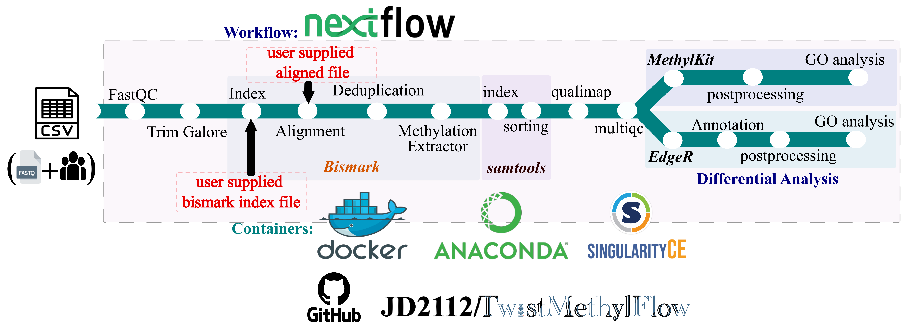
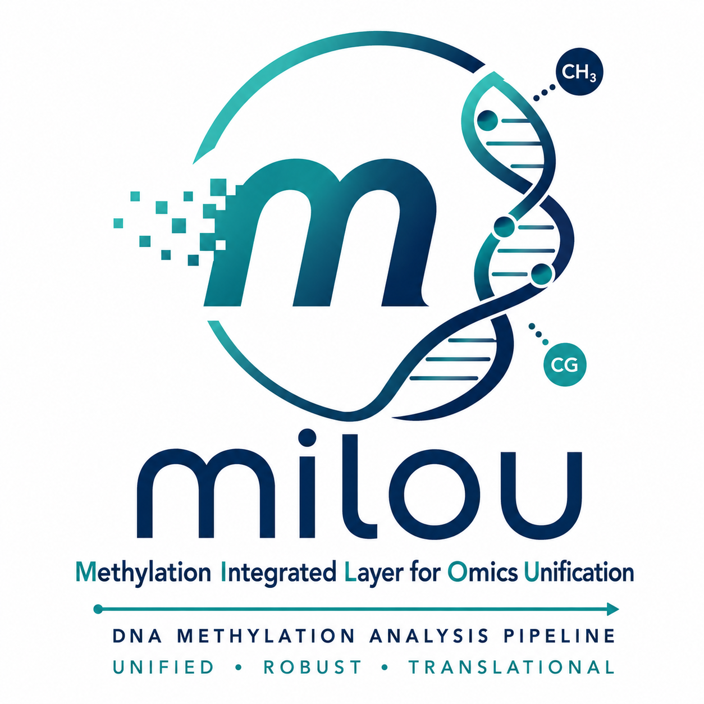

Introduction¶


milou is a robust, end-to-end Nextflow pipeline for comprehensive analysis of DNA methylation data, streamlining the workflow from raw FASTQ files to harmonized analytical outputs and automated, publication-ready reports.
The pipeline features a dual-mode operational design supporting both rapid exploratory research and structured, interpretation-oriented clinical reporting. To accommodate diverse institutional and high-performance computing infrastructures, milou provides GPU-accelerated alignment and deduplication via NVIDIA Parabricks alongside CPU-based execution with Bismark for reproducible, cross-platform analysis. A unified results layer aggregates differential methylation calls across three complementary statistical frameworks (DSS, edgeR, methylKit), functional enrichment (Gene Ontology and KEGG Pathview diagrams), and clinical annotations (gnomAD, OMIM) into harmonized, deterministic outputs.
Research Use Only (RUO)
This pipeline is intended for Research Use Only (RUO). It has not been clinically validated and is not approved for diagnostic use. The generated reports are designed to support data interpretation and hypothesis generation, and must not be used for medical decision-making.

1. Key Features¶
- End-to-End Methylation Analysis: Complete workflow from raw FASTQ files to differential methylation, functional enrichment (GO/KEGG), and integrated downstream interpretation.
- Dual Execution Engine (GPU + CPU): Flexible support for high-speed GPU-accelerated processing (NVIDIA Parabricks) and standard CPU-based workflows (Bismark), enabling both rapid turnaround and reproducible analysis.
- Dual-Mode Reporting (Research vs Clinical-Style): Supports both research mode for fast, exploratory analysis and clinical-style mode for structured, interpretation-oriented outputs with prioritized results and summaries.
- Unified Analysis Layer: Harmonizes outputs across modules into standardized result tables, integrating differentially methylated regions (DMRs), gene-level summaries, functional enrichment (GO/KEGG), and disease association layers.
- Integrated Biological Interpretation: Built-in annotation modules connect methylation changes to biological pathways and disease-relevant genes, facilitating downstream interpretation without manual integration.
- Automated, Publication-Ready Reports: Generates clean, structured reports (PDF/HTML) via Quarto, combining statistical results with narrative summaries for easy interpretation and sharing.
- Security & Container Auditing (quindecagon): All containers within milou undergo strict continuous security verification using quindecagon, incorporating automated static analysis, OCI image vulnerability scanning (Trivy, Grype), Software Bill of Materials (SBOM) generation (Syft), and cryptographic image signing (Cosign).
- FAIR Open Science Archive (Zenodo): Complete execution reports, timelines, MultiQC dashboards, and Python evaluation scripts are permanently archived on Zenodo at DOI: 10.5281/zenodo.22326688.
- Reproducible & Scalable Architecture: Built with Nextflow DSL2 and containerized environments, ensuring portability across HPC, cloud, and local systems with bitwise determinism (
set.seed(42)).
2. Pipeline Capabilities¶
| Category | Feature | Status |
|---|---|---|
| Core Processing | Dual-track Processing (GPU-Accelerated / CPU-Standard) | ✅ |
| Multi-method Differential Methylation (DSS, edgeR, methylKit) | ✅ | |
| Enrichment | Functional Annotation (GO / KEGG Pathway) | ✅ |
| Disease Association Layer (DisGeNET) | ✅ | |
| Analysis | Unified Analysis Layer (Integrated Structured Outputs) | ✅ |
| Gene Prioritization (Significance + Effect Size Scoring) | ✅ | |
| Reporting | Automated PDF/HTML Integrated Research Reports | ✅ |
| Technical MultiQC Reporting | ✅ | |
| Review Layer | Integrated Region Annotation (Promoter/Enhancer/Distal) | ✅ |
Clinical-Style Review Mode (--mode clinical) |
✅ | |
| Clinical Rigor | Data Integrity (Input SHA256 Checksumming) | ✅ |
| Bitwise Determinism (Enforced Random Seeds) | ✅ | |
| Automated Output Sanity Validation (Pass/Fail Checks) | ✅ | |
| HIPAA-Compliant Schema Enforcement | ✅ | |
| Infrastructure | Containerized (Singularity, Docker, Conda) | ✅ |
| Reproducible DSL2 Modular Architecture | ✅ |
3. Quick Start & Execution Syntax¶
Sample sheet (CSV format) with sample information Sample_sheet.csv:
sample_id,group,read1,read2
SN09,Healthy,SN09_R1_001.fastq.gz,SN09_R2_001.fastq.gz
SN10,Disease,SN10_R1_001.fastq.gz,SN10_R2_001.fastq.gz
Each row represents a pair of fastq files (paired end).
Sample Information
PLEASE NOTE: minimum 3 samples per group are required to run the differential methylation analysis.
Now run the pipeline using:
nextflow run JD2112/milou \
-profile singularity,gpu \
--sample_sheet Sample_sheet_twist.csv \
--genome_fasta path/to/genome.fa \
--diff_meth_method dss,edger \
--gtf_file /data/Homo_sapiens.GRCh38.104.gtf \
--refseq_file /data/hg38_RefSeq.bed.gz \
--outdir Results/milou_GPU
pipeline run
- Running on NVIDIA GPUs with CUDA will reduce the time significantly, but if not available, runs on cpu using bismark -
nextflow run JD2112/milou \
-profile singularity \
--sample_sheet Sample_sheet_twist.csv \
--genome_fasta path/to/genome.fa \
--diff_meth_method dss,edger \
--gtf_file /data/Homo_sapiens.GRCh38.104.gtf \
--refseq_file /data/hg38_RefSeq.bed.gz \
--outdir Results/milou_CPU
conf/params.config
For more details and further functionality, please refer to the usage documentation and the parameter documentation.
4. Pipeline Output Directory Structure¶
milou generates a comprehensive results/ folder including:
- MultiQC Report: Combined stats for all QC and alignment steps.
- Clinical Research Report: Automated PDF/HTML report (Quarto) containing physician-ready summaries of DMRs and pathways.
- Unified Analysis Layer: Integrated tables combining DMR statistics with GO, KEGG, and disease associations.
- Visualizations: Volcano plots, MA plots, dot plots, and GO/KEGG chord diagrams.
GPU output
results_test_bisulfite_gpu/
├── clinical_reporting
├── conversion_qc
├── differential_methylation
├── multiqc
├── parabricks_analysis
├── pipeline_info
├── prepare_genome
├── read_processing
├── report
├── result_analysis
└── unified_layer
CPU output
results_test_bisulfite_cpu/
├── bismark_analysis
├── clinical_reporting
├── conversion_qc
├── differential_methylation
├── multiqc
├── pipeline_info
├── prepare_genome
├── read_processing
├── report
├── result_analysis
└── unified_layer
For more details about the output files and reports, please refer to the output documentation.
5. Hardware Benchmarking¶
Benchmarked on hg38 (Human Genome) using 24 paired-end samples on the Dardel HPC and Fraka HPC.
| Feature | CPU Track (Standard) | GPU Track (Parabricks) |
|---|---|---|
| Indexing | Bismark Index | BWA-meth Index |
| Alignment Speed | 1.0x (Baseline) | ~28x Faster |
| Data Extraction | Bismark Extractor | MethylDackel |
| Hardware | 12+ CPU Cores | NVIDIA GPU (16GB+ VRAM) |
6. Development & Authorship¶
Core Developers & Contributors¶
milou was originally conceptualized and written by Jyotirmoy Das (@JD2112) at the Bioinformatics Core Facility and Clinical Genomics Linköping, Linköping University to reduce the gap between the identification of methylation sites per sample and then perform the differential analysis separately.
Main developer & maintainer:
Contributors:
Acknowledgements¶
The authors would like to acknowledge Dr. Vesa Loitto, the Core Facility, Dept. of Biomedical and Clinical Sciences, Faculty of Medicine and Health Sciences at Linköping University, Sweden for his support on this application development. We would like to acknowledge the Core Facility, Faculty of Medicine and Health Sciences, Linköping University, Linköping, Sweden and Clinical Genomics Linköping, Science for Life Laboratory, Sweden for their support. We thank the PDC (Parallelldatorcentrum) Center for High-Performance Computing, KTH Royal Institute of Technology, Sweden, for providing access to the computing resources and storage used in this research. We thank ALF funding support from Region Östergötland (RÖ) and Genomic Medicine Sweden for the computational facility. Clinical Genomics Linköping receives funding from the Science for Life Laboratory.
Citation¶
Das, J., et al. (2026). milou: An End-to-End Nextflow Pipeline for Translational DNA Methylation Profiling with Multi-Method Consensus Scoring.
Software Pipeline Archive: https://doi.org/10.5281/zenodo.14204260
Benchmark Data Archive: https://doi.org/10.5281/zenodo.22326688

Run with¶